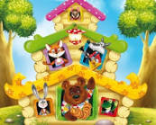
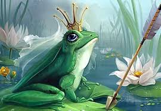
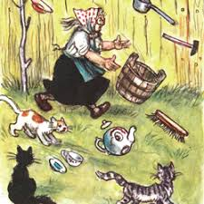
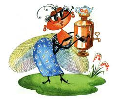
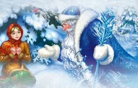
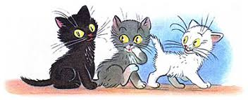
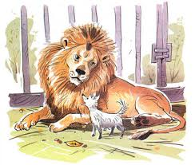

Каша из топора — народная сказка, которую хоть раз слышал каждый. В ней рассказывается о необычном рецепте блюда и смекалке русского человека. Солдат идёт домой на побывку, остановился на ночь у скупой старушки, которая не захотела накормить его ужином. Тогда служивый не растерялся: предложил сварить ей кашу «хоть из топора». Старуха удивилась, но согласилась. Через некоторое время и она, и солдат были сытыми, а бабка и не почувствовала подвоха. Сказка заряжает умением находить выход из любого обстоятельства, не терять при этом чувство юмора и общаться так, чтобы человек чувствовал себя вполне комфортно.
Колобок- сказка, знакомая каждому взрослому, придется по душе и маленьким детям. Они быстро учат простые слова песенки Колобка и с удовольствием подпевают родителям. Из этой сказки малыши узнают, как испекла бабка для деда Колобка и положила на окошко остывать. Устал Колобок лежать, да решил спрыгнуть с окошка и укатиться со двора за ворота. Встретил он по дороге Зайчика, Волка и Медведя, спел им свою песенку и убежал от них, не смогли его звери съесть. Катился дальше Колобок и повстречалась ему Лисичка. Попытался и ее Колобок обмануть, да не получилось у него, хитрее Лиса оказалась. Подманила поближе и скушала вкусный колобок.
Теремок-сказка, которую способен пересказать почти каждый ребенок. Повествует она о необычном соседстве животных. Суть сказки проста: друг за другом на заброшенный теремок (в некоторых вариантах - рукавицу мужика) натыкаются почти каждый представитель леса, спрашивают позволения пожить и остаются все вместе до тех пор, пока к ним не приходит медведь. Как же закончится сказка о гостеприимных зверях? Узнайте вместе с ребенком из текста ниже. Сказка заставляет задуматься о том, что нужно быть добрым по отношению друг другу, уметь делиться, уступать и о том, что важно беречь то, что у тебя есть.
Царевна лягушка — сказка, любимая многими поколениями детей. В ней повествуется о необычном виде сватовства царских сыновей: они выпускают из лука по стреле, чтобы узнать, где им искать себе жену. Одному из них, Ивану-царевичу, выпадает доля жениться на царевне Василисе Премудрой, да только вот она для всех — лягушка по велению злого Кощея Бессмертного, который не смог уговорить ее выйти за него замуж. С первых дней семейной жизни в жизни царских наследников творятся настоящие чудеса. Со временем они начинают понимать, что счастье не в красоте и богатстве, а любовь побеждает все преграды.
Федорово горе — сказка Корнея Чуковского, на котором воспитано не одно поколение советских и российских детей. В сказке повествуется о бунте посуды и утвари против своей хозяйки Федоры, которая оказалась очень нечистоплотной. В её доме царствуют тараканы и грязь. Вещам это надоедает, они собираются и уходят от старушки в лес. Как Федора вернёт своих помощников, и что они переживут в пути? Узнайте в сказке о том, как важно ухаживать за своими вещами, соблюдать чистоту и порядок дома.
Муха-цокотуха — сказка Корнея Чуковского, которую любят и дети, и взрослые уже много лет. Иногда произведение ещё называют «Мухина свадьба». В ней излагается интересная история из жизни маленькой мухи, которая нашла на прогулке монетку, купила в честь этого самовар и позвала всех насекомых на чаепитие. Однако в самый разгар праздника «именинницу» похитил паук. Ни один из гостей не пытается помочь хозяйке в беде, на выручку ей спешит Маленький Комарик, после чего женится на Мухе. Сказка учит тому, что друзья познаются в беде, а настоящая смелость может скрываться в неприметном на вид существе или человеке
Морозко– дивная сказка о противостоянии добра и зла знакома каждому. Тяжела доля Настеньки, не полюбила ее мачеха, ведь своя дочка у нее была, Марфушенька. Красавица Настя всю работу делала, а сестра ее сводная на печи в это время грелась. Встретила как-то девица в лесу парня удалого, Ивана, да только не знала она, что он самовлюблен и заносчив. Проклял его за это волшебник лесной и пообещал превратить в медведя. Как только Иван попробовал медведицу из лука подстрелить, то сбылось наказание прямо на глазах у Насти. Не думала девица, что Ваня посчитает ее виноватой, но душевное тепло Настеньки растопило лед и согрело в трескучие морозы
Три котенка— сказка Владимира Сутеева, которая забавляла не одно поколение детей. В ней идёт речь о шалостях котят, когда они познают окружающий мир. Черный, серый и белый котята изображены в разных ситуациях самим автором: они ловят мышь, а вот попадают в воду вслед за рыбой. Каждое действие с иллюстрацией полезно для чтения детям младшего возраста, чтобы пояснить им многое вокруг. Читайте эту сказку с рисунками, чтобы развивать фантазию детей, навыки, знания о цветах и многом другом.
Лев и собачка— рассказ Льва Толстого, с которым стоит познакомить ребят старшего возраста. В нем писатель показал интересную историю хищного зверя и небольшой собачки. Крохотного зверька принес один из посетителей зоопарка в качестве оплаты за билет на съедение льву. Почему царь зверей оставил ее в живых, как дальше сложились их отношения? Прочтите с детьми. Эта сказка созвучна детскому сердцу. В ней говорится о подлинной дружбе, искреннем сожалении и преданности.